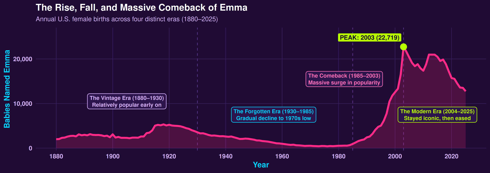

Featuring "Emma" • U.S. Social Security Baby Names (1880–2025)
146 YEARS OF DATA

🔥 PEAK YEAR
2003
Emma's #1 most iconic year
👑 MOST BABIES IN ONE YEAR
22,719
Recorded at Emma's 2003 peak
💜 TOTAL BABIES NAMED EMMA
776,439
Female births from 1880 to 2025
✨ DID YOU KNOW?
Emma almost disappeared from American baby name trends in the 1970s (dropping to just 414 babies in 1976), but made an incredible comeback and reached its peak in 2003!